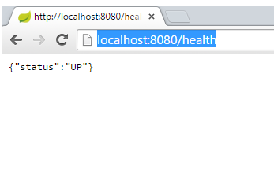

We're going to build a small sample application using Spring Boot. The application is for a leisure centre that wants to be able to show everyone the classes it offers, let its staff edit those classes and let customers book a place on a class
In Eclipse, start a new spring starter project:

Set up details of the project like this - we're using Java 1.8, and Maven to build We're just going to select actuator and web for now, we can add more capabilities later on

We can just click on 'Finish' now, and we will get a zip file downloaded with our new project in. It should look something like this:

Believe it or not we can already run this up and it will do things...Launch it in Eclipse

Now in a browser navigate to http://localhost:8080/health
Hopefully you'll see something like this:
Spring boot actuator has set up a number of URL endpoints automatically. 'health' is one of them. You can see the others when in the console within the IDE (I've shortened the output lines a bit!):
... o.s.b.a.e.mvc.EndpointHandlerMapping : Mapped "{[/beans],methods=[GET],params=[],headers=[],consumes=[],produces=[],custom=[]}" ...
... o.s.b.a.e.mvc.EndpointHandlerMapping : Mapped "{[/env/{name:.*}],methods=[GET],params=[],headers=[],consumes=[],produces=[],custom=[]}" ...
... o.s.b.a.e.mvc.EndpointHandlerMapping : Mapped "{[/env],methods=[GET],params=[],headers=[],consumes=[],produces=[],custom=[]}" ...
... o.s.b.a.e.mvc.EndpointHandlerMapping : Mapped "{[/health],methods=[],params=[],headers=[],consumes=[],produces=[],custom=[]}" ...
... o.s.b.a.e.mvc.EndpointHandlerMapping : Mapped "{[/metrics/{name:.*}],methods=[GET],params=[],headers=[],consumes=[],produces=[],custom=[]}" ...
... o.s.b.a.e.mvc.EndpointHandlerMapping : Mapped "{[/metrics],methods=[GET],params=[],headers=[],consumes=[],produces=[],custom=[]}" ...
... o.s.b.a.e.mvc.EndpointHandlerMapping : Mapped "{[/configprops],methods=[GET],params=[],headers=[],consumes=[],produces=[],custom=[]}" ...
... o.s.b.a.e.mvc.EndpointHandlerMapping : Mapped "{[/dump],methods=[GET],params=[],headers=[],consumes=[],produces=[],custom=[]}" ...
... o.s.b.a.e.mvc.EndpointHandlerMapping : Mapped "{[/info],methods=[GET],params=[],headers=[],consumes=[],produces=[],custom=[]}" ...
... o.s.b.a.e.mvc.EndpointHandlerMapping : Mapped "{[/autoconfig],methods=[GET],params=[],headers=[],consumes=[],produces=[],custom=[]}" ...
... o.s.b.a.e.mvc.EndpointHandlerMapping : Mapped "{[/mappings],methods=[GET],params=[],headers=[],consumes=[],produces=[],custom=[]}" ...
... o.s.b.a.e.mvc.EndpointHandlerMapping : Mapped "{[/shutdown],methods=[POST],params=[],headers=[],consumes=[],produces=[],custom=[]}" ...
... o.s.b.a.e.mvc.EndpointHandlerMapping : Mapped "{[/trace],methods=[GET],params=[],headers=[],consumes=[],produces=[],custom=[]}" ...
Try out some of the others
OK. So far so good, let's add some of our own code now.
For the REST service, we need two classes, the controller class that tells Spring what function will handle which URL/method and a data model class.
I'm going to put the data model classes into their own package just to help keep things tidy, so I added timetable.model. Within that package, I created a simple data model class 'Event':
package timetable.model;
public class Event {
private Long id;
private String title;
public Event(Long id, String title) {
this.id = id;
this.title = title;
}
public Long getId() {
return id;
}
public String getTitle() {
return title;
}
}
We don't need any annotations on this class, or anything else to tell Spring how to handle it
Now we need a controller class
First of all we'll just add an API to return all events, this will be a GET method call to /timetable and will return a list of Events
Here's what it looks like (this is in the timetable package)
The @Controller annotation tells Spring this is a Controller- it's mapping some endpoints.
The @RequestMapping above the class definition gives the root mapping- so all calls to (in our case) http://localhost:8080/timetable will look in here to be processed
The @RequestMapping above the getEvents() method tells Spring this is the method to use for a GET call, and the @ResponseBody annotation before the return type is very important- this tells Spring we want it to send back the body data as it is, we don't have a view defined (the same RequestMapping annotations get used for Spring MVC where Spring would expect to find a view class mapped). Miss it off and you'll get an exception when you try to make your API request
For now, the body of the method just creates a hard-wired List and returns it
Save it all and run it back up (Eclipse should autobuild it for you on saving)
In the console you should be able to see the new endpoint '/timetable' mapped:
Mapped "{[/timetable],methods=[GET],params=[],headers=[],consumes=[],produces=[],custom=[]}" onto public java.util.List timetable.TimetableController.getEvents()
Back in the browser http://localhost:8080/timetable should give you a string of JSON something like this:
[{"id":1,"title":"Yoga"},{"id":2,"title":"Boxercise"}]
Next we'll implement some methods for the Event resource, these will use the URL http://localhost:8080/timetable/event
First a little bit of refactoring- we'll move that List out of the getEvents method, and change it to be a map (so we can index individual Event objects). We'll initialise it in the class constructor. The code now looks like this:
Now we can add a method to implement GET for an individual Event. The id of the event is used as part of the URL (this is the path variable).
If it can't find the event in the URL, it will throw an exception, this is annotated with HttpStatus.NOT_FOUND (404), which Spring will return for us if this exception is thrown
http://localhost:8080/timetable/event/1 should give us back the yoga class, http://localhost:8080/timetable/event/2 the boxercise class
Next, the POST method can add a new class to the container. We generate the id automatically, and return the path to the generated event in the http header for the response. This path can be used as the URL for a subsequent request e.g. GET, DELETE
Because the Event is now included as a RequestBody, we do need to add a default constructor to the event class
Finally, the DELETE method will remove an event
Now we have all these interfaces implemented, we can test them manually, using Chrome REST Console, or cURL, but it would be good to get some automated tests. Spring/JUnit test framework can be used for this
When we created the project we automatically got a src/test/java folder, with a TimetableApplicationTests in it.
In the same folder, we can create a new class TimetableControllerTest to test our rest controller